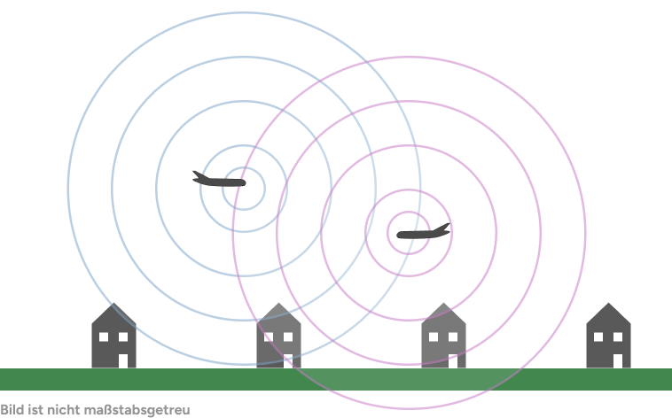

Wie Flugtracking funktioniert
Moderne Flugtracking-Systeme nutzen verschiedene Technologien, um Flugzeuge weltweit in Echtzeit zu verfolgen. Die Grundlage bilden Funksignale, die von Flugzeugen ausgesendet und von Empfängern am Boden oder im Weltraum aufgefangen werden. Durch die Auswertung dieser Signale lassen sich präzise Flugdaten wie Position, Geschwindigkeit und Höhe bestimmen. Im Folgenden werden die Verfahren ADS-B, MLAT und TDOA sowie Satellit vorgestellt, die diese faszinierende Technologie ermöglichen.
ADS-B
(Automatic Dependent Surveillance-Broadcast)ADS-B ist ein offizielles Luftfahrt-Überwachungssystem, das von der EASA und der FAA vorgeschrieben und genutzt wird. Die Flugsicherung soll auch unabhängig vom Radar dazu in der Lage sein, Flugzeuge zu sehen, umso schneller agieren zu können. Darüber hinaus ist es für Piloten durch die hohe Reichweite ermöglicht, sich gegenseitig früher zu erkennen und mögliche Gefahren frühzeitig zu eliminieren.
Funktionsweise
Jedes Flugzeug berechnet zu jedem gegebenen Zeitpunkt seine Position. Diese wird meist über GPS bestimmt. Nach der Berechnung werden die Positionsdaten mithilfe eines Transponders an Bord in ein standardisiertes Funkpaket übersetzt, welches dann mehrmals pro Sekunde gesendet wird (→ Broadcast). Die Frequenz beträgt 1090 MHz, die eine Reichweite von 200-400 km ermöglicht (line of sight). Solange es also Empfänger/Geräte in diesem Bereich gibt, die auf dieser Frequenz Daten abfangen können, können Flugdaten problemlos gesammelt und ausgewertet werden.
MLAT und TDOA
(Multilateration & Time Difference of Arrival)
Jedes Flugzeug sendet ein sog. Mode-S-Signal. Mehrere Empfänger
erhalten dieses Signal, aber zu minimal unterschiedlichen
Zeiten. Diese Zeitunterschiede (TDOA) werden genutzt, um die
Position des Flugzeugs zu ermitteln. Wenn Empfänger A das Signal
1 µs vor Empfänger B empfängt, kann aus diesem Zeitunterschied
eine Distanz berechnet werden.
Da sich Funk mit Lichtgeschwindigkeit ausbreitet entspricht 1 µs
umgerechnet etwa 300 m. Um die Position eines Flugzeugs mit
hoher Sicherheit zu bestimmen werden im Idealfall 6 - 10
Empfänger gebraucht.
Während TDOA die Messgröße darstellt, bezeichnet MLAT das
Verfahren. MLAT sammelt TDOA-Daten und berechnet aus diesen dann
die Flugposition. Wichtig zu beachten ist daher, dass
Empfängergeräte extrem genau synchronisiert sein müssen. Wie
oben gezeigt kann bereits die kleinste Abweichung die MLAT
Nutzung unbrauchbar machen.
Satellit
TODO